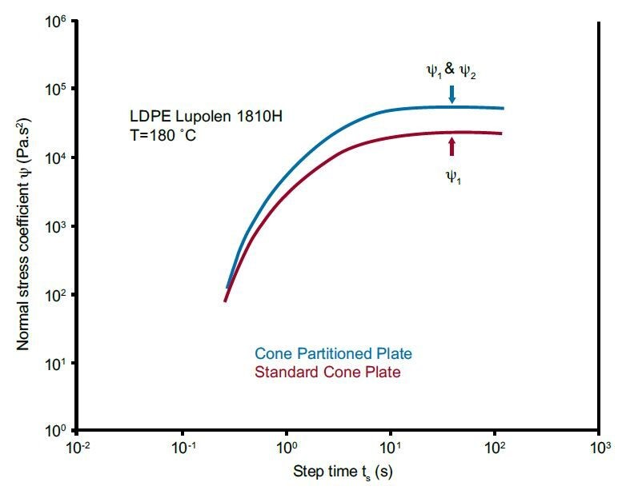

The new ARES-G2 Cone and Partitioned Plate Accessory (CPP) expands testing capabilities for highly elastic materials at large deformations in both oscillation and steady shear. The CPP geometry is a modification of the conventional cone-plate test configuration in which only the central portion of the plate is coupled to the stress measurement. This creates a “guard ring” of sample around the active measurement area, delaying the effects of edge failure, allowing for higher strains to be measured on elastic materials. Uniform and stable temperature control is provided by the Forced Convection Oven (FCO). The CPP is unique to the ARES-G2 and further extends its advantages for LAOS testing and polymer rheology.
LAOS Measurments
The fundamental shear moduli and the relative harmonic intensities are shown below as a function of strain amplitude for LDPE as measured with a standard cone plate and partitioned cone plate. Up to 80% strain, the results from CPP and standard plates compare favorably. Beyond 80% the reported shear moduli are lower for the standard plates than for the CPP geometry. Edge fracture in the standard cone-plate compromises the sample condition, leading to erroneously low measured modulus values at higher strains. The CPP is less susceptible to this artifact, and reliable data are collected up to 3000% strain. The harmonic intensities agree well, although severe fracturing disqualifies the shear moduli above 80% strain.
Transient viscosity and normal force measurments
The partitioned plate also provides more consistent steady state results at high strains. With the partitioned plate configuration, the measured normal force is a result of the 1st and 2nd normal stress differences. From experiments with both standard and partitioned cone plate geometries, the 2nd normal stress difference can be extracted.
